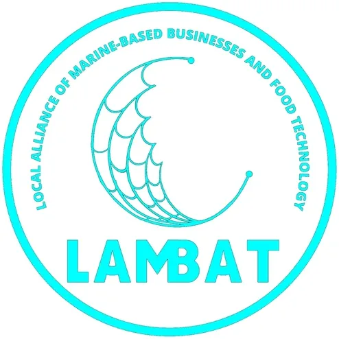

SSU TBI LAMBAT (Samar State University)
Samar State University (SSU) · Region VIII
LAMBAT Technology Business Incubator is the DOST-supported Technology Business Incubator of Samar State University (SSU) in Catbalogan City, Samar, focused on marine and food processing technology — reflecting SSU's position as the primary university serving one of the Philippines' most prolific maritime provinces. The name LAMBAT (Local Alliance of Marine-based Businesses and Food Technology) captures the center's identity as a net that gathers and nurtures innovations from Western Samar's fishing, coastal, and food processing communities.
- Category
- Technology Business Incubator
- Host institution
- Samar State University (SSU)
- City
- Catbalogan City, Samar
- Region
- Region VIII
- Operating status
- Operating
About the Center
With a dedicated Facebook page (ssutbilambat) with 2,300+ followers, LAMBAT TBI has built an active community of student entrepreneurs and regional innovators. The center taps SSU's strengths in fisheries, marine sciences, and food technology to incubate startups that add value to Western Samar's marine and coastal economy.
Programs & Services
- Marine Tech Startup Incubation — Structured incubation for technology-based startups in marine fisheries, coastal aquaculture, marine product processing, and ocean-related technology
- Food Processing Innovation — Support for enterprises developing food products from Samar's marine and agricultural resources — including fish processing, seaweed-based products, and value-added seafood
- Mentorship & Coaching — Access to SSU faculty experts in fisheries, food science, and marine engineering, plus DOST mentors specializing in agri-aquaculture and food processing
- Business Development Support — Workshops and one-on-one coaching on business model development, market research, financial planning, and investor pitch preparation
- Prototyping & Lab Access — Use of SSU's fisheries and food technology facilities for product development, recipe testing, and prototype validation
- DOST Program Linkage — Access to DOST startup grants, PCAARRD fisheries and marine programs, and PCIEERD commercialization support for qualifying ventures
- Community Innovation — Outreach to fishing communities and coastal entrepreneurs in Western Samar to co-develop and commercialize marine-based innovations
Contact
Sources & references
- ssu.edu.ph/2021/08/09/ssu-tbi-lambat-marks-open-season
- ssu.edu.ph/2025/11/12/ssu-renews-ties-with-dosts-heirit-program-sustains-te…
- ssu.edu.ph/2022/02/09/ssu-tbi-lambat-startup-peddlr-hoists-seed-funding-to-…
Details are drawn from public records and the sources above, July 2026.
Startupreneur Innovation Hub · synced from the Notion catalog (July 2026) · status: published.